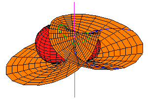
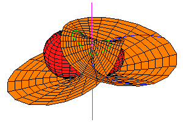

Common Transversals and Tangents
Frank SottileUniversity of Masssachusetts, Amherst
19 July 2002
Symbolic Computational Algebra 2002
University of Western Ontario


Common Transversals and TangentsFrank SottileUniversity of Masssachusetts, Amherst 19 July 2002 Symbolic Computational Algebra 2002 University of Western Ontario |
|
1 | ||
|
||||
Besides the interesting geometry, computation, and pictures, the geometry in 3-space is a fertile area for potential applications of symbolic and computational algebra.

 
